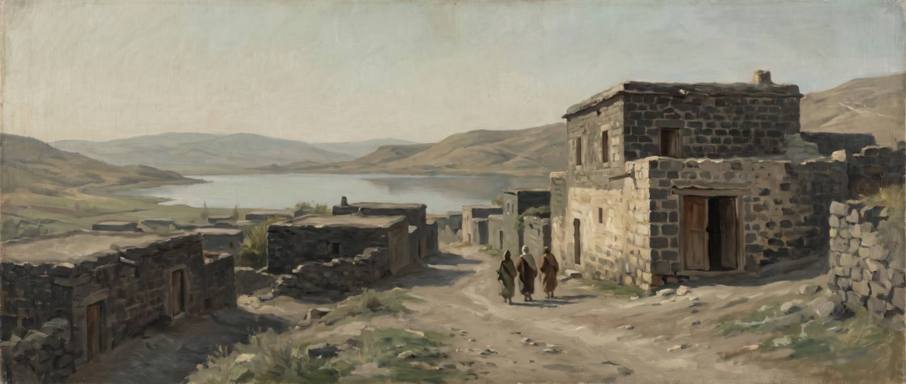
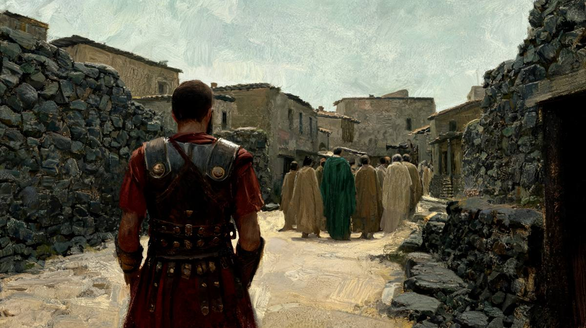
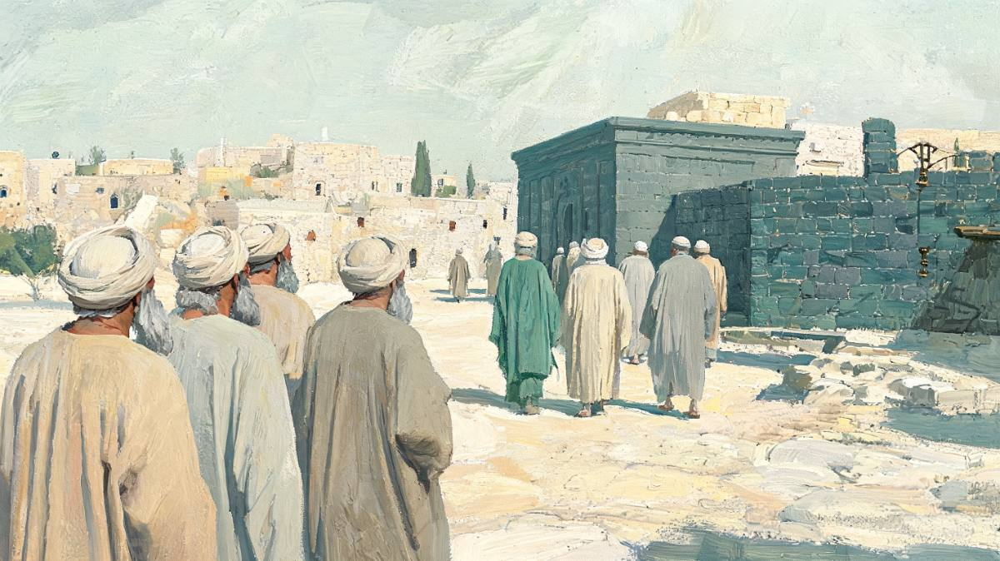
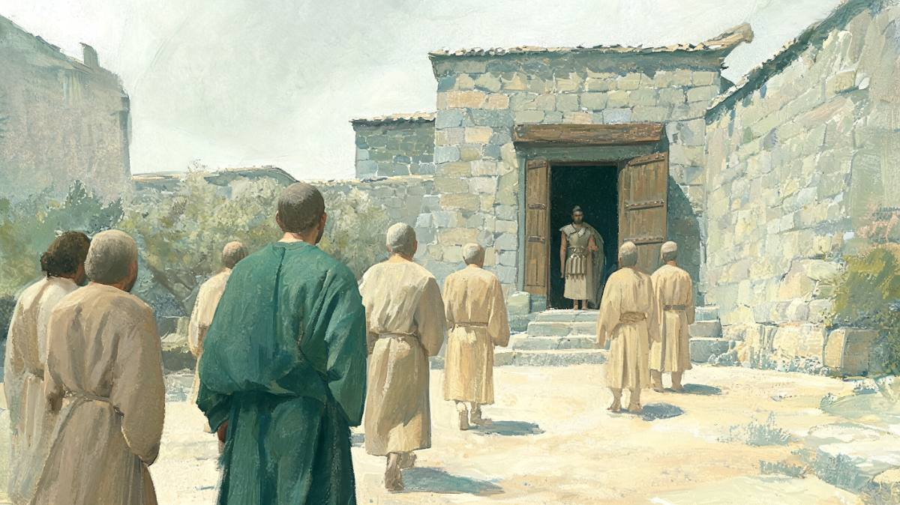
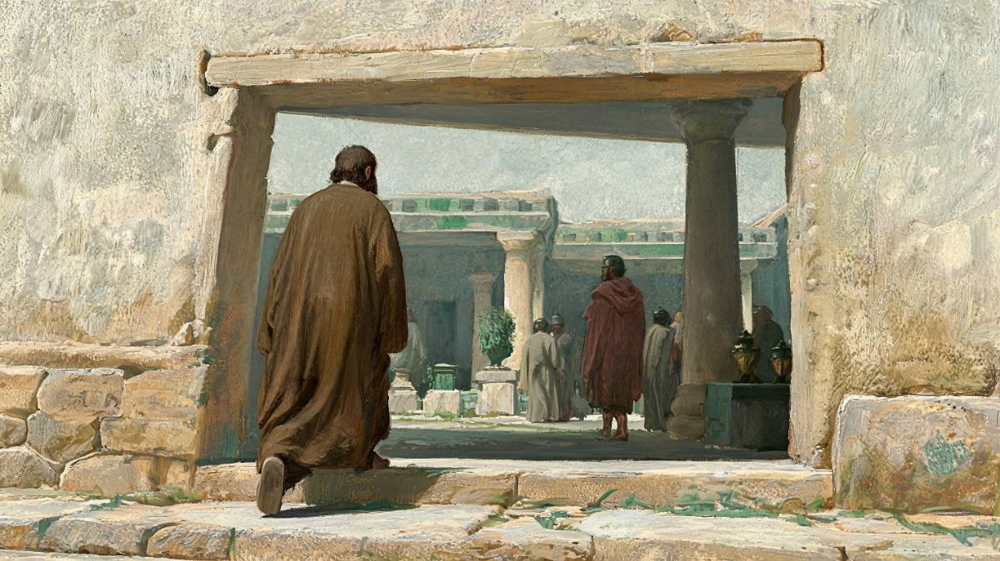

백부장은 직접 왔을까요?
마태복음에서는 백부장이 예수님께 직접 나아와요. 누가복음에서는 유대인 장로들을 보내고, 다음에는 벗들을 보내요. 본인은 끝까지 집에서 나오지 않아요. 같은 사건인데 왜 이렇게 다를까요?
두 복음서는 정말 다르게 말할까요?
네, 달라요. 누가 예수님 앞에 섰는지가 다르게 적혀 있어요.
예수께서 가버나움에 들어가시니 한 백부장이 나아와 간구하여
마태복음 8:5 · 개역개정
예수의 소문을 듣고 유대인의 장로 몇 사람을 예수께 보내어 오셔서 그 종을 구해 주시기를 청한지라 이에 그들이 예수께 나아와 간절히 구하여 이르되 이 일을 하시는 것이 이 사람에게는 합당하니이다
누가복음 7:3–4 · 개역개정
차이를 한눈에 보려고 두 이야기의 흐름을 그려 보았어요. 위가 마태, 아래가 누가예요. 누가복음에서는 예수님과 백부장이 한 번도 마주치지 않아요.
다른 점을 표로 모아 보면 이래요. 요한복음 4:46–54에도 가버나움에서 멀리 있는 환자를 말씀으로 고치신 이야기가 있어서 같이 놓았어요.
| 마태 8:5–13 | 누가 7:1–10 | 요한 4:46–54 | |
|---|---|---|---|
| 청하는 사람 | 백부장 본인 | 1차 유대 장로들, 2차 벗들 | 왕의 신하 본인 |
| 환자 | παῖς 아이·종 | δοῦλος 종 (7절만 παῖς) | υἱός 아들 (51절 παῖς) |
| 병세 | 중풍으로 몹시 괴로워함 | 죽게 됨 | 죽게 됨 |
| 백부장 소개 | 없음 | 민족을 사랑하고 회당을 지어 줌 | — |
| 예수님의 평가 | 이스라엘 중 이만한 믿음이 없다 + 동서에서 많은 사람이 온다(11–12절) | 이스라엘 중에서도 이만한 믿음이 없다 | — |
| 끝 | 예수님이 백부장에게 직접 “가라”, 그 시로 나음 | 보냄받은 사람들이 돌아가 종이 나은 것을 봄 | 종들이 도중에 알림, “그 시”를 확인 |
그러면 백부장이 한 말도 다를까요?
아니에요. 말은 거의 한 글자도 다르지 않아요.
백부장이 한 말을 헬라어 원문으로 맞대어 보았어요. 마태 8:8 뒷부분부터 9절까지 백부장의 말은 마흔여덟 낱말이에요. 그중 마흔네 낱말이 누가 7:6–8에 같은 순서로 들어 있어요. 군대 비유를 담은 마태 8:9는 서른 낱말인데, 누가 7:8에 전부 들어 있어요. 누가 쪽이 “(명령 아래) 매인”(τασσόμενος) 한 낱말을 더 가졌을 뿐이에요.
백부장이 대답하여 이르되 주여 내 집에 들어오심을 나는 감당하지 못하겠사오니 다만 말씀으로만 하옵소서 그러면 내 하인이 낫겠사옵나이다
마태복음 8:8 · 개역개정
그러니까 백부장의 사람됨과 믿음은 두 복음서에서 같아요. 자기 집에 예수님을 모실 자격이 없다고 여기고, 말씀 한마디면 된다고 믿어요. 달라진 것은 그 말이 누구의 입으로 예수님께 전해졌느냐뿐이에요. 행동이 다른 게 아니라 이야기를 담는 틀이 달라요.
그럼 마태가 틀리게 쓴 걸까요?
아니에요. 고대 독자에게는 이상한 서술이 아니었어요.
사람을 보내 한 일을 본인이 한 일로 적는 것은 그때 흔한 말하기 방식이었어요. 유대 법 전통에도 이 원칙이 한 문장으로 남아 있어요.
사람의 대리인은 그 사람 자신과 같다. שְׁלוּחוֹ שֶׁל אָדָם כְּמוֹתוֹ (쉴루호 셸 아담 케모토)
미쉬나 베라코트 5:5
미쉬나는 200년 무렵 정리된 문헌이라, 이 문장을 1세기 법정 용어로 그대로 옮기면 안 돼요. 다만 대리인이 한 일을 보낸 사람의 일로 보는 생각은 우리말에도 있어요. 비서를 보내 축하했어도 “사장님이 축하해 주셨다”고 말하잖아요.
이 문제를 처음 정면으로 다룬 사람은 아우구스티누스예요. 그는 마태가 “아주 익숙한 표현 방식”을 따랐다고 설명했어요. 중재자를 통해 다가간 것을 본인이 온 것으로 말했다는 거예요.
백부장은 더 온전히 믿었으므로, 더 참되게 주께 나아왔다.
아우구스티누스 『복음서 기자들의 일치』 2.20
크리소스토모스가 이렇게 풀었어요(『마태복음 설교』 26). 하지만 누가복음 본문과 맞지 않아요. 백부장은 “내가 주께 나아가기도 감당하지 못할 줄을 알았다”고 말해요(누가복음 7:7). 끝에서도 집에 돌아가는 사람은 “보내었던 사람들”이에요(7:10). 누가는 백부장이 나오지 않았다고 분명하게 적어요.
대리인 원칙은 두 기록이 서로 거짓말하지 않는다는 것까지 설명해요. 그런데 왜 마태는 줄여 쓰고 누가는 길게 썼는지는 설명하지 않아요. 그 답은 두 복음서가 이 이야기로 무엇을 말하려 했는지에 있어요.
마태는 왜 중간 사람을 뺐을까요?
이방인이 예수님 앞에 직접 서야 마태가 하려는 말이 서기 때문이에요.

첫째, 마태는 원래 이렇게 줄여 쓰는 복음서예요. 가장 좋은 비교 본문은 야이로 이야기예요. 마가복음에서 야이로는 딸이 “죽게 되었다”고 청해요. 예수님이 가시는 도중에 집에서 사람들이 와서 딸이 죽었다고 전하고요. 마태는 이 전달자 장면을 빼요. 대신 야이로가 처음부터 “방금 죽었다”고 말하게 해요. 두 장면을 한 장면으로 접은 거예요.
| 본문 | 딸의 상태를 알리는 사람 | 원문 · 사역 |
|---|---|---|
| 마가복음 5:23 | 야이로 | ἐσχάτως ἔχει 죽게 되었다 |
| 마가복음 5:35 | 집에서 온 사람들 | ἀπέθανεν· τί ἔτι σκύλλεις τὸν διδάσκαλον; 죽었다. 어찌하여 선생을 더 괴롭게 하느냐 |
| 누가복음 8:49 | 집에서 온 한 사람 | μηκέτι σκύλλε τὸν διδάσκαλον 선생을 더 괴롭게 하지 말라 |
| 마태복음 9:18 | 야이로 본인 | ἄρτι ἐτελεύτησεν 방금 죽었다 |
누가복음 8:49의 “괴롭게 하다”(σκύλλω)는 백부장 이야기에도 똑같이 나와요. 벗들이 전한 “수고하시지 마옵소서”(7:6)가 이 낱말이에요. 누가는 두 이야기에서 모두 길 위에서 전달자가 이 낱말을 말하게 해요. 마태는 두 이야기에서 모두 그 전달자를 지워요.
그렇다고 마태가 늘 사람을 빼는 건 아니에요. 야고보와 요한이 청탁하는 장면에서는 거꾸로 어머니를 세워요(마태복음 20:20, 마가복음 10:35는 두 아들 본인). 마태는 기계적으로 줄이는 게 아니라 자기가 강조하려는 것에 맞게 사람을 배치해요.
둘째, 마태는 사람들이 예수님께 “나아오는” 장면을 즐겨 써요. “나아오다”(προσέρχομαι)를 복음서별로 세어 보았어요.
셋째, 가장 중요한 이유는 11–12절이에요. “동서로부터 많은 사람이 이르러 아브라함과 함께 앉고, 나라의 본 자손들은 바깥 어두운 데 쫓겨난다”는 말씀은 누가복음에서는 전혀 다른 대목(13:28–29)에 있어요. 마태는 이 말씀을 백부장 이야기 한가운데에 넣었어요. 이렇게 하면 치유 이야기가 “믿음은 누가 가졌는가”를 묻는 이야기로 바뀌어요.
이 대비가 서려면 이방인 백부장이 예수님 앞에 직접 서 있어야 해요. 예수님의 칭찬도, 마지막 “가라, 네 믿은 대로 될지어다”(13절)도 백부장에게 직접 떨어져야 하고요. 마태가 백부장이 회당을 지어 주었다는 소개를 빼는 것도 같은 방향이에요. 헤그너(Hagner)는 이것을 이방인이 받은 은혜를 그 자체로 드러내려는 선택으로 읽어요. 자격을 추천받은 사람이 아니라 믿음 하나로 선 사람이라는 거예요.
누가는 왜 사람을 두 번 보내게 했을까요?
“합당하다”를 “합당하지 않다”로 뒤집기 위해서예요.

첫 번째로 온 유대 장로들은 백부장을 추천해요. 우리 민족을 사랑하고 회당을 지어 주었으니 “합당하다”(ἄξιός, 7:4)고 말해요. 그런데 두 번째로 온 벗들이 전하는 백부장 자신의 말은 정반대예요.
예수께서 함께 가실새 이에 그 집이 멀지 아니하여 백부장이 벗들을 보내어 이르되 주여 수고하시지 마옵소서 내 집에 들어오심을 나는 감당하지 못하겠나이다 그러므로 내가 주께 나아가기도 감당하지 못할 줄을 알았나이다 말씀만 하사 내 하인을 낫게 하소서
누가복음 7:6–7 · 개역개정
7절의 “감당하지 못할 줄을 알았다”는 원문으로 “나 자신을 합당하게 여기지 않았다”(οὐδὲ ἐμαυτὸν ἠξίωσα)예요. 장로들이 쓴 “합당하다”(ἄξιος)와 뿌리가 같은 낱말이에요. 놀런드(Nolland)가 이 대응을 짚었어요. 사람들은 “그는 합당하다”고 하고, 본인은 “나는 합당하지 않다”고 해요. 사절이 두 번 오지 않으면 이 대비는 생기지 않아요.

두 번째 사절이 오는 곳도 눈여겨볼 만해요. “그 집이 멀지 아니하여”예요. 예수님은 이미 거의 문 앞까지 오셨어요. 백부장은 그 마지막 몇 걸음을 막아요. 문 안으로 들어오시게 하는 것이 예수님께 짐이 된다고 여긴 거예요.
미쉬나에 “이방인의 거처는 부정하다”(מְדוֹרוֹת הַגּוֹיִם טְמֵאִין, 오홀로트 18:6)는 규정이 있어요. 역시 200년 무렵 문헌이라 1세기에 똑같이 적용됐다고 단정할 수는 없어요. 다만 베드로가 고넬료의 집에서 한 말이 1세기 사정을 직접 보여 줘요. “유대인으로서 이방인과 교제하거나 가까이하는 것이 위법인 줄은 너희도 알거니와”(사도행전 10:28). 백부장은 이 사정을 알고 예수님을 배려한 거예요.
그래서 누가복음에서 예수님은 이 백부장을 끝내 한 번도 보지 않으세요. 장로들이 백부장을 추천하고, 벗들이 백부장의 말을 전하고, 보냄받았던 사람들이 돌아가 종이 나은 것을 확인해요. 놀런드는 이것을 두고 예수님이 이방인과의 관계에서는 “유대인 고유의 틀 속에 머물러 있었다”고 정리해요. 누가는 마가복음에 있는 수로보니게 여인 이야기(마가복음 7:24–30)도 싣지 않아요. 이방인에게 직접 가는 일은 두 번째 책인 사도행전으로 미뤄 둔 거예요.
이 장면은 사도행전 10장을 미리 보여 줘요
누가는 백부장을 두 번 그려요. 한 번은 문 앞에서 멈추고, 한 번은 문을 넘어요.
사도행전 10장의 고넬료도 백부장이에요. 두 사람을 소개하는 말이 놀랄 만큼 닮았어요.
| 가버나움의 백부장 (누가복음 7장) | 가이사랴의 고넬료 (사도행전 10장) | |
|---|---|---|
| 유대인과의 관계 | “우리 민족을 사랑하고 회당을 지었다” (7:5) | “백성을 많이 구제하고” (10:2), “유대 온 족속이 칭찬하는” (10:22) |
| 누가 추천하나 | 유대인 장로들 | 고넬료가 보낸 사람들 |
| 사람을 보냄 | 장로들, 그다음 벗들 (7:3, 6) | 하인 둘과 경건한 군사 하나 (10:7–8) |
| 집 문턱 | “내 집에 들어오심을 감당하지 못하겠다” — 들어가지 않으심 | “이방인과 가까이하는 것이 위법인 줄” — 베드로가 들어감 (10:27–28) |
| 원문 표현 | ἑκατοντάρχης 백부장 | ἑκατοντάρχης 백부장 (10:22) |

누가복음 7장은 예수님이 이방인의 집 문턱 앞에서 멈추시는 장면이고, 사도행전 10장은 베드로가 그 문턱을 넘는 장면이에요. 놀런드는 두 백부장이 조용히 짝을 이루면서 “나중의 이방 선교를 위한 강력한 변증”이 된다고 봐요. 누가가 사절단을 두 번 세운 것은 이 짝을 만들기 위한 준비로도 읽을 수 있어요.
어느 쪽이 원래 이야기에 더 가까울까요?
학자들 사이에서 아직 갈려요.
마태와 누가는 이 이야기를 마가복음이 아닌 공통 자료(흔히 Q라고 불러요)에서 가져왔다고 봐요. 마가복음에는 이 이야기가 없어요. 그 공통 자료에 사절단이 있었는지가 쟁점이에요.
- 마태가 줄였다 — 다우어(1984), 쉬르만, 복(Bock). 놀런드는 첫 번째 사절(장로들)은 원래 전승에 있었고 마태가 뺐을 수 있다고 봐요.
- 누가가 덧붙였다 — 개그넌(Gagnon, 1994)은 두 사절 모두 누가가 넣었다고 봐요. 놀런드도 두 번째 사절(벗들)은 누가가 넣었을 가능성을 인정해요. 벗들이 말하는데 화자는 백부장인 어색한 구문, 8:49와 같은 “괴롭게 하다”가 근거예요.
- 원래부터 두 형태가 돌았다 — 브륄러(Bruehler, 2022)는 두 판본이 있었거나 마태가 줄였다는 쪽으로 기울면서도 누가의 확장 가능성을 열어 둬요.
요한복음 4장은 제3의 흐름을 보여 줘요. “죽게 되었다”는 누가와 요한에만 있고, “그 시”는 마태와 요한에만 있어요. 세 기록이 서로 엇갈리며 겹쳐서, 어느 한 기록이 나머지의 원본이라고 말하기 어려워요. 헤그너는 환자를 가리키는 παῖς(아이·종)가 원래 말이고, 누가는 “종”으로, 요한은 “아들”로 뜻을 좁혔다고 봐요.
결정적으로 입증된 것은 없어요. 다만 두 가지는 분명해요. 마태는 만남을 압축했고, 누가는 중재를 강조했어요. 그리고 고대 독자에게 두 서술은 서로 모순되지 않았어요.
정리하면
| 항목 | 근거 | 판정 |
|---|---|---|
| 두 복음서의 백부장은 같은 말을 한다 | 마태 8:8b–9 48낱말 중 44낱말이 누가 7:6–8에 같은 순서로 있음 | 확인 |
| 대리인을 통한 행위를 본인 행위로 쓰는 관용이 있었다 | 미쉬나 베라코트 5:5, 아우구스티누스 『일치』 2.20 | 확인 |
| 마태는 전달자 장면을 접어 쓰는 습관이 있다 | 마가 5:35 사절 → 마태 9:18 야이로 본인이 “방금 죽었다” | 확인 |
| 누가는 “합당하다”를 “합당하지 않다”로 뒤집는다 | 7:4 ἄξιος ↔ 7:7 ἠξίωσα, 같은 어근 | 확인 |
| 누가 7장은 사도행전 10장 고넬료와 짝을 이룬다 | 백부장·유대인의 칭찬·사람을 보냄·집 문턱 | 가설 |
| 서로 다른 두 사건이다 | 같은 도시, 같은 계급, 거의 같은 말과 같은 칭찬 | 근거 약함 |
| 사람을 보낸 뒤 백부장 본인도 왔다 | 누가 7:7 “나아가기도 감당하지 못할 줄”, 7:10 보낸 사람들만 돌아감 | 반증 |
| 원래 전승에 사절단이 있었다 | 마태 축약설과 누가 확장설이 맞섬 | 미결 |
어려운 말 풀이
- 백부장 百夫長
- 로마식 군대에서 백 명 안팎을 거느린 지휘관이에요. 실제로는 육십에서 여든 명쯤을 거느렸어요.
- 공관복음 共觀福音
- 마태·마가·누가 세 복음서예요. 같은 사건을 나란히 놓고 볼 수 있어서 이렇게 불러요.
- Q 자료
- 마태와 누가에는 있고 마가에는 없는 공통 말씀 자료를 부르는 학계 이름이에요. 실제 문서가 남아 있지는 않아요.
- 쉴루호 שְׁלוּחוֹ
- “그가 보낸 사람”, 곧 대리인이에요. 대리인이 한 일은 보낸 사람이 한 일로 여겨졌어요.
- 미쉬나 Mishnah
- 200년 무렵 정리된 유대 구전 율법 모음이에요. 1세기 사정을 보여 주기도 하지만, 연대를 따져 가며 읽어야 해요.
- 사절 使節
- 누군가의 뜻을 전하려고 보낸 사람이에요. 이 페이지에서는 장로들과 벗들을 가리켜요.
근거 자료
낱말 수와 동사 빈도는 SBL 헬라어 신약(SBLGNT)의 형태소 자료를 직접 집계한 값입니다. 다른 판본에서는 한두 번 차이가 날 수 있습니다. 백부장의 말 비교는 마태 8:8의 “감당하지 못하겠사오니”부터 9절 끝까지를 누가 7:6의 같은 말부터 8절 끝까지와 순서대로 대조했습니다.
미쉬나 두 구절은 히브리어 원문을 확인했습니다. 미쉬나는 200년 무렵 편집된 문헌이므로 1세기의 법 실무로 그대로 소급하지 않았습니다. 현대 주석서의 견해 가운데 Gagnon, Dauer, Schürmann, Bock, Judge, Wegner는 Bruehler의 논문을 통해 간접 확인한 것이며, 원저를 직접 읽지는 못했습니다.
- SBLGNT / MorphGNT 형태소 자료 — 마태 8:5–13, 9:18, 20:20; 마가 5:22–23, 5:35, 10:35; 누가 7:1–10, 8:49; 요한 4:46–51; 사도행전 10:2, 7–8, 22, 28. προσέρχομαι·σκύλλω 전수 집계
- 미쉬나 베라코트 5:5, 오홀로트 18:6 — Sefaria 히브리어 원문
- 아우구스티누스 『복음서 기자들의 일치』 2.20 (NPNF 영역본)
- 요한 크리소스토모스 『마태복음 설교』 26 (NPNF 영역본)
- J. Nolland, 『WBC 성경주석 35 누가복음(상)』 (솔로몬, 원서 1989) 583–590쪽 — 양식·구조와 7:3–6 주석
- D. A. Hagner, 『WBC 성경주석 33 마태복음(상)』 (솔로몬, 원서 1993) 366–370쪽 — 8:5–13 양식·구조와 주석
- 『IVP 성경배경주석 신약』 누가복음 7:1–10 해설(237–238쪽)
- B. B. Bruehler, “Expecting the Unexpected in Luke 7:1–10”, Tyndale Bulletin 73 (2022) — 사절단 문제 연구사 정리
- R. A. J. Gagnon, “The Shape of Matthew’s Q Text of the Centurion at Capernaum: Did It Mention Delegations?”, New Testament Studies 40 (1994) 133–142 (서지 확인, 요지는 2차 인용)
- 대한성서공회 『성경전서 개역개정판』 (장절 표기와 짧은 인용)